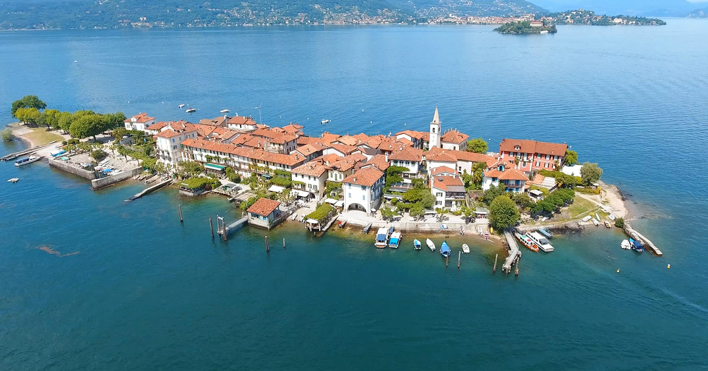
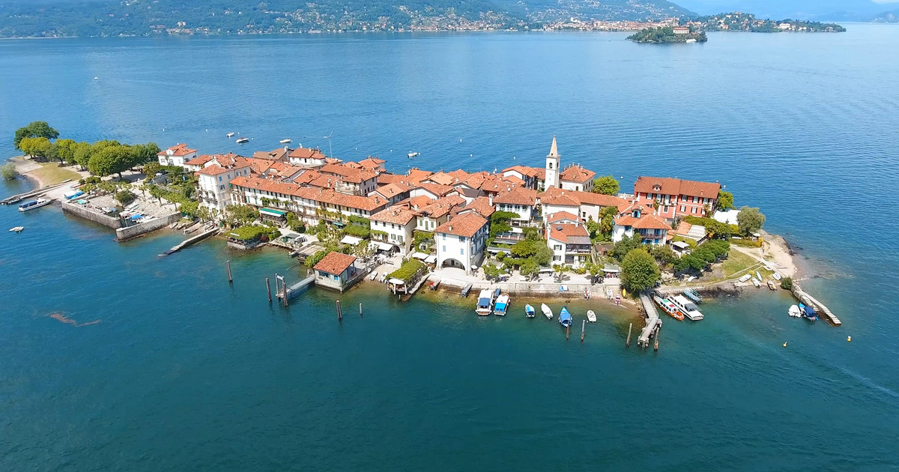

L'isola Pescatori
 

Isola dei Pescatori (meaning Fishermen's Island) is an island in Lake Maggiore in northern Italy. As the most northerly of the three principal Borromean Islands it is also known as Isola Superiore and, with a population of 25 in 2018, it is the only one to be inhabited all year round. Unlike Isola Bella and Isola Madre, the island has never belonged to the Borromeo family.
The island is about 375 metres long by 100 metres wide. A narrow street running along its spine is joined by cobbled alleys to the promenade that encircles the island. The promenade is frequently flooded and the houses built against it are constructed to allow for this. In 1971, the population of the island was 208, but has steadily declined to 25 in 2018. While the traditional occupation of fishing still exists, tourism has become central to the economic life of the island as its picturesque charms have made Isola dei Pescatori a popular destination, particularly for day-trippers, but also for more extended visits. In addition to the hotels, restaurants and gift-shops, there are boutiques selling craft products, holiday homes, and a small fishing museum in the old elementary school . The church of San Vittore (Victor the Moor) retains traces of an ancient chapel that was probably constructed for the monks of Scozzòla (an abbey of San Donato di Sesto Calende founded by Liutardo, bishop of Pavia, in the mid ninth century). The church was previously dedicated to S. Gangolfo (Gangulphus), whose veneration is linked with the Abbey of San Donato.